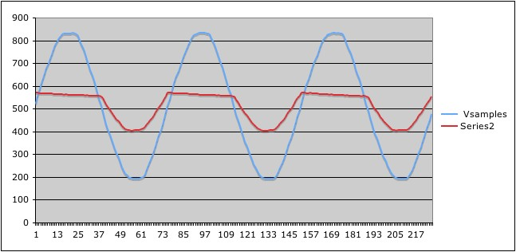
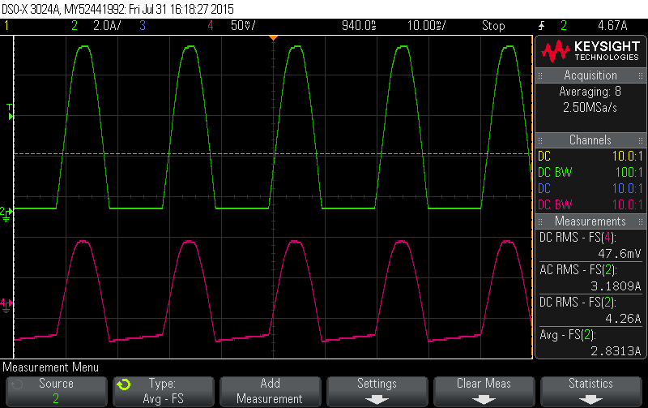

hi guys: I am using emon library to measure the RMS current.
this library has a function is to calculate the current RMS , it allows the user to define the number of the samples taken to calculate the RMS value
double EnergyMonitor::calcIrms(unsigned int Number_of_Samples)
{
#if defined emonTxV3 int SupplyVoltage=3300;
#else int SupplyVoltage = readVcc();
#endif
for (unsigned int n = 0; n < Number_of_Samples; n++)
{
sampleI = analogRead(inPinI);
// Digital low pass filter extracts the 2.5 V or 1.65 V dc offset, // then subtract this - signal is now centered on 0 counts.
offsetI = (offsetI + (sampleI-offsetI)/1024);
filteredI = sampleI - offsetI;
// Root-mean-square method current // 1) square current values
sqI = filteredI * filteredI;
// 2) sum
sumI += sqI;
}
double I_RATIO = ICAL *((SupplyVoltage/1000.0) / (ADC_COUNTS));
Irms = I_RATIO * sqrt(sumI / Number_of_Samples);
//Reset accumulators
sumI = 0;
//--------------------------------------------------------------------------------------
return Irms;
}
my problem is the with the OFFSET VALUE, as I understand the offset is supposed to be 2.5 volt when the voltage is 5 volt which is 512 (10 adc ) or 1.65 volt when the voltage is 3.3 volt .
but here in this library, the offset is constantly changing as in this line of code :
offsetI = (offsetI + (sampleI-offsetI)/1024);
filteredI = sampleI - offsetI;
the initial value of the offset is 512 (2.5 volt )
but it keeps changing, I couldn’t find any explanation for this although the results are accurate.
Does anybody have an explanation for this ?
Re: HOW does the offset code work in emon library
Who said the offset itself is constant? Read up on filters of the digital kind.
Re: HOW does the offset code work in emon library
thanks Robert, yeah that explained a lot
here is the link in case someone needs to refer to.
http://openenergymonitor.org/emon/buildingblocks/digital-filters-for-off...
Re: HOW does the offset code work in emon library
As Robert Wall suggested it is probably because the offset of 512 is not always at 512. But what causes it to shift? Does it significantly shift during use? Or are we using it mainly to avoid calibration for the deviation in the components of our PCB?
Re: HOW does the offset code work in emon library
Yes, I did write that it is not always 512. The resistors that fix the midpoint voltage are 1% tolerance devices, so if one is high and the other low, the midpoint will be shifted, which will falsely increase the reading if the software cannot follow it. It will also move due to temperature effects, and possibly due to component ageing.
Why fix it and add to the calibration procedure (which some users don't want to or don't have the necessary equipment to follow) and decrease the accuracy, particularly at low currents, if a few simple lines of code solve the problem for everybody for ever?
Re: HOW does the offset code work in emon library
I think this solution with the digital filter is quite brilliant, but when I first read the referenced article I was unsure why they did such a complex calculation for a simple offset.
Do you also happen to know: is the most recent firmware working with high-pass or low-pass filter?
Re: HOW does the offset code work in emon library
The low-pass should have replaced the high pass in all versions - it can be initialised very easily so negates the need to make dummy readings to allow the filter to settle.
It's quite easy to check which you have - just look at the source code, the low pass won't have a constant like 0.995 (I think it was) in the filter maths.
Re: HOW does the offset code work in emon library
I am just wondering what this LOW PASS filter exactly filters? For the high pass filter I can understand that a high-pass filter with a cut-off frequency of less than 50 Hz will filter out all the frequency components below 50 Hz including the DC offset which is 0 Hz component. But for the low pass filter , what does exactly it filter out?
Re: HOW does the offset code work in emon library
It filters out the standing offset - which is subsequently subtracted (and if you look at the code, you'll see that).
Re: HOW does the offset code work in emon library
the offset of 512 is not always at 512. But what causes it to shift? Does it significantly shift during use?
Yes, it does. The offset value is continuously drifting up and down to accommodate changes in the shape of the waveform that is being monitored. With the 'half-power' waveform for current shown below, where power is only consumed for one half of each mains cycle, the offset will settle to the 'true' mid-point rather than the 0V point. The filtered waveform for current can be seen to be correctly 'balanced' around the 0V point.

Note also the slope on the 'flat' sections. This nicely demonstrates how the LPF is always drifting towards its goal. This effect is not apparent when continuous waveforms are present.
Re: HOW does the offset code work in emon library
The offset value is continuously drifting up and down to accommodate changes in the shape of the waveform that is being monitored.
I think that's more an unfortunate consequence of the filter, rather than a desired outcome(*). In an ideal world you'd subtract out exactly what you added in (the mid-rail offset) and leave the original signal unmolested. In the real world the filter used to track the mid-rail offset (and even before that, the CT itself) removes any DC from the signal. Whether or not that matters depends on what you're trying to measure. It has pretty much no impact on Real Power but will give you the wrong answer for Irms.
(*) To the extent that you might argue: I'm not interested in anything below 50Hz and am deliberately filtering it out to increase my dynamic range, I guess you could claim it's a desired outcome. I have one Fluke meter that deliberately filters out anything below 45Hz and another that deliberately goes all the way to DC. You need to know which one you're using to know how to interpret the AC amps reading.
In the attached scope trace you can see the three different readings (green trace). Note that 3.182 + 2.832 = 4.262. By the time time the signal has been molested by the CT (pink trace) any attempt to calculate Irms will only reveal 3.18A as the DC component has been lost forever.

Re: HOW does the offset code work in emon library
dBC: I think that's more an unfortunate consequence of the filter ... It has pretty much no impact on Real Power but will give you the wrong answer for Irms.
My ASCII plots of the raw sample values, and your 'scope traces, serve to show the floating nature of the CT. No filters have been applied at this stage. It's the sensor hardware itself which is drifting, always to minimise the DC content with reference to the mid-rail reference voltage.
For non-symmetrical waveforms, it's not obvious where the software should regard the mid-point as being. One option may be to measure the quiescent offset and then subtract this value from all subsequent readings.
Another possible approach which I posted a while back is to regard the mid-point of the waveform for current to occur at the same moment as when the waveform for voltage is at its own mid point. This will only be true when Power Factor is unity. This work is recorded in my Summary Page as follows:
temporalAlignment_dev.ino This demonstrates an alternative way of tracking the true zero point of the current waveform. With non-sinusoidal waveforms, such as half-rectified AC, this works much better than the standard HP filter. Could be useful for applications where Power Factor is required. Originally posted on 20/12/12 at http://openenergymonitor.org/emon/node/1705, this code is available at
http://openenergymonitor.org/emon/sites/default/files/temporalAlignment_...